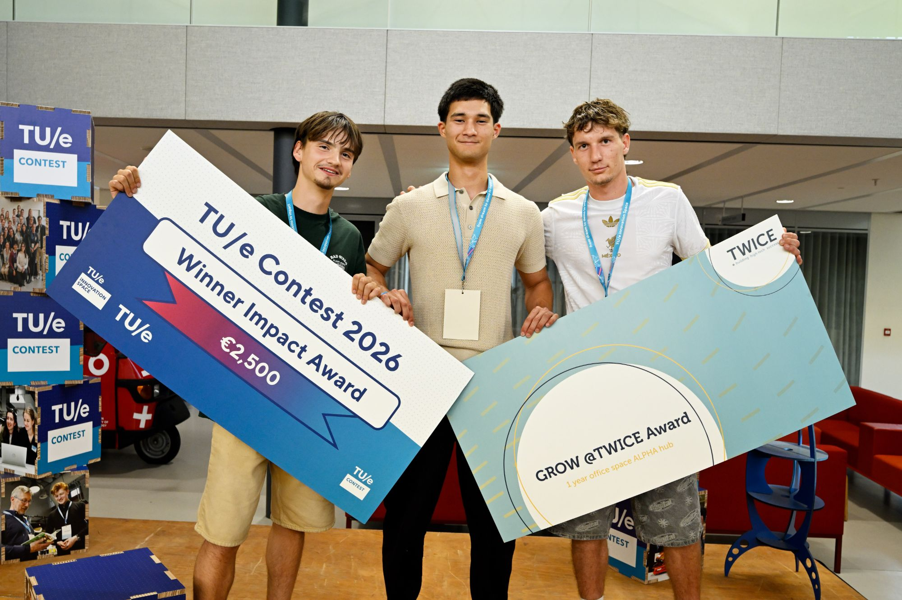
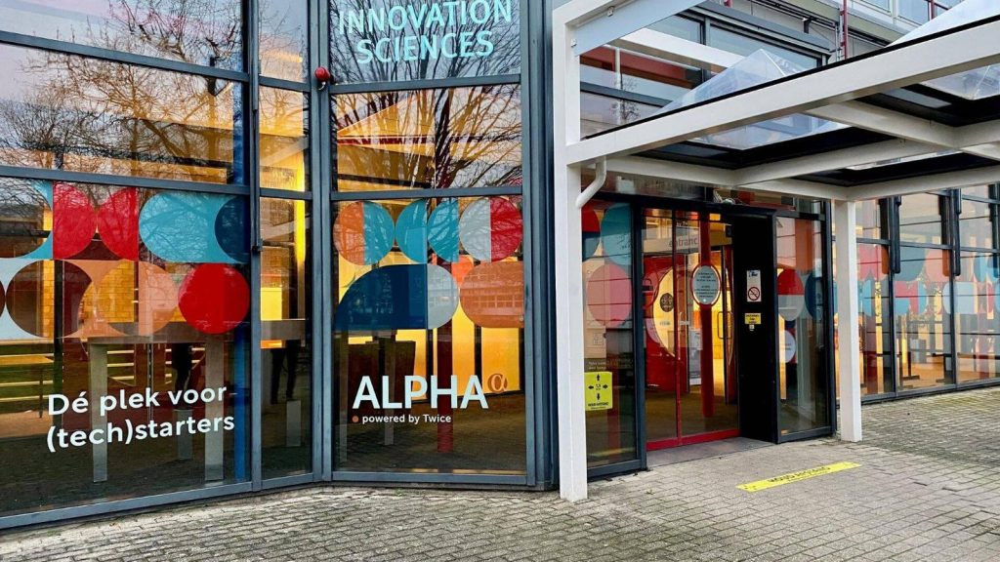
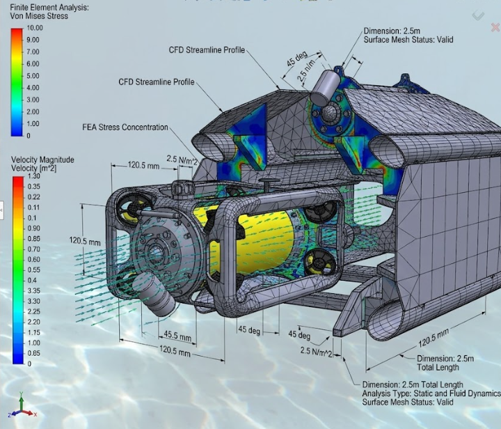

Startup · Co-Founder · Feb 2026 to Present

Sunken Robotics is a startup I co-founded with three fellow engineering students in Eindhoven. We're building docking, charging, and data infrastructure for autonomous underwater inspection drones: a permanently deployed housing the drone returns to, where it's secured, charged, offloads its data, and redeploys without a boat or crew standing by.
The problem: thousands of underwater structures, from canal walls to offshore wind foundations, have no continuous structural monitoring. Inspection today means vessels, divers, and ROV crews: expensive, slow, and weather-dependent. We're starting with Dutch waterways and canals, with offshore wind as the long-term market.
The idea started in February 2026. A few months later we entered the TU/e Contest 2026, TU/e's entrepreneurship competition, where we pitched to industry experts, tested our assumptions, and confirmed there's real demand for the solution. We walked away with two awards:
Alpha is now our home base, where we work side by side with other early-stage tech startups.

We're now designing and engineering our first housing and docking station prototype. I lead its mechanical design in Onshape. Every part is modelled, dimensioned, and documented in drawing sets for fabrication.

Early concept visual
The station has to live underwater unattended for months. That means designing for things you don't worry about on a drone that gets pulled out after every dive: biofouling, silt build-up, corrosion between dissimilar metals, and staying put on soft mud while ship wash and the station's own pumps push on it. Every design choice has to hold up long-term, not just on day one.